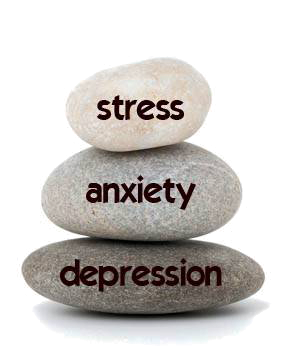
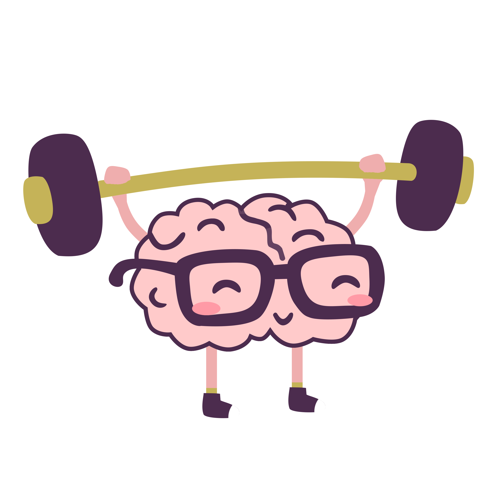
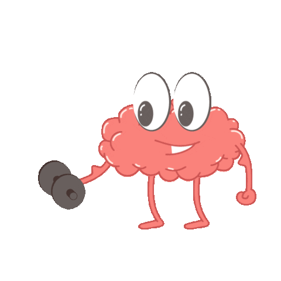

|
|
|
What is Mental Health?
Mental health includes our emotional, psychological, and social well-being. It affects how we think, feel, and act. It also helps determine how we handle stress, relate to others, and make choices. Mental health is important at every stage of life, from childhood and adolescence through adulthood.
Over the course of your life, if you experience mental health problems, your thinking, mood, and behavior could be affected. Many factors contribute to mental health problems, including:
Biological factors, such as genes or brain chemistry,Life experiences, such as trauma or abuse, Family history of mental health problems.
Not sure if you or someone you know is living with mental health problems? Experiencing one or more of the following feelings or behaviors can be an early warning sign of a problem:Eating or sleeping too much or too little, Pulling away from people and usual activities, Feeling numb or like nothing matters, Feeling helpless or hopeless, Smoking, drinking, or using drugs more than usual, Feeling unusually confused, forgetful, on edge, angry, upset, worried, or scared, Yelling or fighting with family and friends, Having persistent thoughts and memories you can't get out of your head, Hearing voices or believing things that are not true, Inability to perform daily tasks like taking care of your kids or getting to work or school
Mental Health Myths and Facts
Myth: Children don't experience mental health problems.
Fact: Even very young children may show early warning signs of mental health concerns. These mental health problems are often clinically diagnosable, and can be a product of the interaction of biological, psychological, and social factors. Half of all mental health disorders show first signs before a person turns 14 years old, and three quarters of mental health disorders begin before age 24. Unfortunately, less than 20% of children and adolescents with diagnosable mental health problems receive the treatment they need. Early mental health support can help a child before problems interfere with other developmental needs.
Myth: I can't do anything for a person with a mental health problem.
Fact: Friends and loved ones can make a big difference. Only 44% of adults with diagnosable mental health problems and less than 20% of children and adolescents receive needed treatment. Friends and family can be important influences to help someone get the treatment and services they need by: Reaching out and letting them know you are available to help, Helping them access mental health services, Learning and sharing the facts about mental health, especially if you hear something that isn't true, Treating them with respect, just as you would anyone else, Refusing to define them by their diagnosis or using labels such as "crazy"
Anxiety, Depression, Stress
Depression refers to an experience where you feel down most of the time which is called "low mood" and you have also lost interest in things you usually enjoy. You may also have changes in your sleep, appetite, feel guilty, de-motivated and generally withdraw from others.
Stress is usually characterized by a sense of feeling overwhelmed. This feeling may be due to your coping capacity being over-stretched or having been under pressure for too long. Some stress can help us to perform our day to day functions, too much stress leaves us "distressed" and often exhausted.
Anxiety is a sense of fear or dread that something terrible is going to happen. Anxiety can be general or specific to a place, social situation or thing (phobia)
YOU ARE NOT ALONE IN THE JOURNEY HERE ARE SOME STORIES FROM OUR FELLOW FRIENDS
| STORY ONE |
|---|
When I was 26 years old, my symptoms of mental illness caused many problems for me. I started to have emotional problems for the first time and was hospitalized in Texas. One of my darkest moments was when I was having a lot of fear and feeling angry about life. In addition, not getting along with family and friends was causing problems for me in my life. I was not able to hold a job and was having dealings with the police. I felt as if I had a void in my life and nowhere to go. Not being able to function in society was a problem for me. These are some of the feelings I was experiencing at my first hospitalization. Having acceptance of my mental illness means taking charge of my life and moving forward. This has played a big part in my recovery. I started to have acceptance of my mental illness after giving myself credit for my strengths and weaknesses and accepting my limitations. Also, believing that I have something to offer in society and doing positive, healthy things in my life. Not giving up in life has been a positive thing for me. It has helped me to make a lot of progress in my life. In my journey as a Peer Support Specialist and being involved with NAMI has helped me with acceptance. Also, having family, friends, and being a student has very much helped me to accept my mental illness. Staying in treatment and taking my medications has also helped me with acceptance. It is very important for me to use coping skills that can help me get through a tough day. Having good coping skills for me, means I have a plan in managing my mental illness. There are several coping skills that I use. You can take a hot shower, listen to music, watch television, and keep a balance with your schedule during the week. Medication is also important to me and my treatment. Also, take plenty of breaks when you are doing your school assignments and do not procrastinate in getting your homework done. It's a good idea to have a good support system to help manage your symptoms and people who can help you with moral support. Also, I make sure to get enough sleep and eat healthy, plus exercise. I want to make sure to keep a balance in my life and have activities to do during the week. It's been beneficial for me to be attend my support group meetings at NAMI, which has been a big part of my support system. I like facilitating groups and making friends. Basically, pull something out of your toolbox to help you cope better. This helps you cope better when you are having a bad day. Knowing that hope is the "cornerstone of recovery" and believing you can have success with your life is critical. Your successes and dreams take on many different directions to arrive at your destination. Success means to me means building upon my strengths and moving forward in my life. Hope means that you believe in yourself and feeling positive never accepting defeat. |
SIGN IN TO READ MORE STORIES AND SHARE YOUR OWN STORY |
STORY TWO |
Having achieved two bachelor's degrees and a master's degree public health, she thought she "had the world by the tail." Although she had experienced dark feelings and insecurities before, she never would have believed they would lead to full-blown depression. But by the time Katherine was 28, her depression had impacted her life in a major way. She had been hospitalized numerous times, lost her apartment, job and benefits, ultimately forcing her to file for bankruptcy and move in with her parents. I truly believed that any hope of having any semblance of a normal adult life was over and I would forever remain an adult-child dreaming of the life that could have been. But at a hospital dialectical behaviour therapy (DBT) day-program she attended, life began to turn around. Through the program's individual and group therapy (most helpful for people who have difficultly managing their emotions), She learned new skills to manage and cope with her emotions and tolerate emotional distress. Eight years after her life fell apart, She re-entered the job market and her life "took giant leap forward." In her words, Recovery is possible for most everyone because it is defined by the person doing it. There is no right or wrong way to recover - rather it is about living a life that has ups and downs, successes and failures, dreams and hopes - one that is fulfilling. It is about building or rebuilding a life in spite of being diagnosed with a mental illness. I never thought that I would be able to take the most disenfranchising event in my life, being diagnosed as seriously mental ill, and turn it into one of the most empowering. |
|---|
SIGN IN TO READ MORE STORIES AND SHARE YOUR OWN STORY |
SOME OF THE COMMON TIPS FROM OUR PSYCHOLOGY EXPERTS
Tips | Tips |
Avoid alcohol, smoking and drugsDrinking and smoking aren't things which we always associate with withdrawal symptoms, but they can cause some which impact on your mental health. When you've had a few drinks you can feel more depressed and anxious the next day, and it can be harder to concentrate. Excessive drinking for prolonged periods can leave you with a thiamine deficiency. Thiamine is important for our brain function and a deficiency can lead to severe memory problems, motor (coordination) problems, confusion and eye problems. If you smoke, between cigarettes your body and brain go into withdrawal which makes you irritable and anxious. Other drugs will often leave you in withdrawal and can often cause very low moods and anxiety. More severe effects of drugs include paranoia and delusions. There is some research that suggests drug use is related to developing mental disorders like schizophrenia. Eat wellEating well isn't just important for our bodies, but it's also important for our minds. Certain mineral deficiencies, such as iron and vitamin B12 deficiencies, can give us a low mood. Try to eat a balanced diet. If you find you're a particularly stressed or anxious person, you should try limiting or cutting out caffeine as this can make you feel jittery and anxious. 
|
Do something you enjoyTry to make time for doing the fun things you enjoy. If you like going for a walk, painting or a specific TV show, try to set aside time to enjoy yourself. If we don't spend any time doing things we enjoy, we can become irritable and unhappy. Whether you need help to get out and about or not take a look at our Things To Do section, or go to our Events calendar, for ideas and information on what is going on in your area. Connect with others and be sociableMake an effort to maintain good relationships and talk to people whenever you get the chance. Having friends is important not just for your self-esteem, but also for providing support when you're not feeling too great. Research has found that talking to others for just ten minutes can improve memory and test scores! 
|
|---|